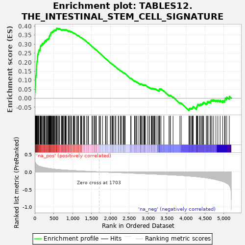
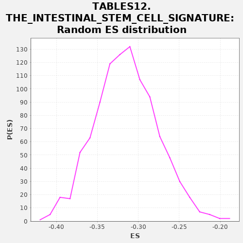

| | | Dataset | al5_v_al2 |
| Phenotype | NoPhenotypeAvailable |
| Upregulated in class | na_pos |
| GeneSet | TABLES12.THE_INTESTINAL_STEM_CELL_SIGNATURE |
| Enrichment Score (ES) | 0.38888377 |
| Normalized Enrichment Score (NES) | NaN |
| Nominal p-value | NaN |
| FDR q-value | 1.0 |
| FWER p-Value | 0.0 |
Table: GSEA Results Summary

Fig 1: Enrichment plot: TABLES12.THE_INTESTINAL_STEM_CELL_SIGNATURE
Profile of the Running ES Score & Positions of GeneSet Members on the Rank Ordered List
| PROBE | GENE SYMBOL | GENE_TITLE | RANK IN GENE LIST | RANK METRIC SCORE | RUNNING ES | CORE ENRICHMENT | | 1 | Sorbs2 | | | 1 | 0.440 | 0.0189 | Yes |
| 2 | Rnf43 | | | 3 | 0.360 | 0.0343 | Yes |
| 3 | Tia1 | | | 7 | 0.295 | 0.0465 | Yes |
| 4 | Utrn | | | 10 | 0.286 | 0.0586 | Yes |
| 5 | Fam13a | | | 12 | 0.278 | 0.0705 | Yes |
| 6 | Atrx | | | 13 | 0.273 | 0.0823 | Yes |
| 7 | Lgr5 | | | 15 | 0.268 | 0.0938 | Yes |
| 8 | Picalm | | | 19 | 0.263 | 0.1046 | Yes |
| 9 | Klhl24 | | | 21 | 0.258 | 0.1156 | Yes |
| 10 | Cdk6 | | | 28 | 0.242 | 0.1249 | Yes |
| 11 | Nav1 | | | 37 | 0.223 | 0.1330 | Yes |
| 12 | Brd8 | | | 39 | 0.220 | 0.1423 | Yes |
| 13 | Zfp292 | | | 40 | 0.218 | 0.1518 | Yes |
| 14 | Msi1 | | | 41 | 0.218 | 0.1613 | Yes |
| 15 | Mycbp2 | | | 47 | 0.217 | 0.1697 | Yes |
| 16 | Rgmb | | | 48 | 0.216 | 0.1791 | Yes |
| 17 | Blnk | | | 51 | 0.213 | 0.1880 | Yes |
| 18 | Mlxip | | | 55 | 0.210 | 0.1965 | Yes |
| 19 | Pdgfa | | | 58 | 0.205 | 0.2050 | Yes |
| 20 | Bcl11a | | | 67 | 0.200 | 0.2120 | Yes |
| 21 | Tns3 | | | 68 | 0.199 | 0.2207 | Yes |
| 22 | Sipa1l1 | | | 69 | 0.199 | 0.2293 | Yes |
| 23 | Cttnbp2 | | | 74 | 0.194 | 0.2369 | Yes |
| 24 | Axin2 | | | 77 | 0.187 | 0.2446 | Yes |
| 25 | Fto | | | 96 | 0.173 | 0.2485 | Yes |
| 26 | Mecom | | | 97 | 0.173 | 0.2560 | Yes |
| 27 | Stk39 | | | 106 | 0.170 | 0.2618 | Yes |
| 28 | Vdr | | | 111 | 0.166 | 0.2682 | Yes |
| 29 | Trim24 | | | 138 | 0.156 | 0.2697 | Yes |
| 30 | Cenpf | | | 139 | 0.156 | 0.2765 | Yes |
| 31 | Tubb2b | | | 145 | 0.154 | 0.2822 | Yes |
| 32 | Cbx6 | | | 146 | 0.154 | 0.2888 | Yes |
| 33 | Farp1 | | | 160 | 0.148 | 0.2927 | Yes |
| 34 | Trim28 | | | 172 | 0.145 | 0.2968 | Yes |
| 35 | Vgll4 | | | 193 | 0.137 | 0.2987 | Yes |
| 36 | Tifa | | | 195 | 0.137 | 0.3044 | Yes |
| 37 | Arid5b | | | 223 | 0.129 | 0.3046 | Yes |
| 38 | Dach1 | | | 238 | 0.127 | 0.3073 | Yes |
| 39 | Limk2 | | | 250 | 0.123 | 0.3104 | Yes |
| 40 | Smo | | | 257 | 0.122 | 0.3145 | Yes |
| 41 | Ppp1r9a | | | 271 | 0.119 | 0.3171 | Yes |
| 42 | Wwp1 | | | 275 | 0.118 | 0.3216 | Yes |
| 43 | Elmo1 | | | 309 | 0.110 | 0.3197 | Yes |
| 44 | Noxa1 | | | 310 | 0.110 | 0.3245 | Yes |
| 45 | Hmbox1 | | | 325 | 0.107 | 0.3263 | Yes |
| 46 | Mecp2 | | | 338 | 0.104 | 0.3285 | Yes |
| 47 | Cd44 | | | 355 | 0.101 | 0.3296 | Yes |
| 48 | Atr | | | 366 | 0.099 | 0.3319 | Yes |
| 49 | Foxp4 | | | 378 | 0.096 | 0.3338 | Yes |
| 50 | Zfp397 | | | 380 | 0.095 | 0.3378 | Yes |
| 51 | Hmgcs2 | | | 382 | 0.095 | 0.3417 | Yes |
| 52 | Mcc | | | 387 | 0.095 | 0.3450 | Yes |
| 53 | Acss2 | | | 396 | 0.094 | 0.3475 | Yes |
| 54 | Irf2bp2 | | | 400 | 0.093 | 0.3509 | Yes |
| 55 | Zfp451 | | | 409 | 0.092 | 0.3533 | Yes |
| 56 | Sema7a | | | 418 | 0.091 | 0.3556 | Yes |
| 57 | Zfp704 | | | 420 | 0.091 | 0.3594 | Yes |
| 58 | Scml4 | | | 425 | 0.090 | 0.3625 | Yes |
| 59 | Slc25a4 | | | 431 | 0.090 | 0.3654 | Yes |
| 60 | Uhrf2 | | | 446 | 0.087 | 0.3664 | Yes |
| 61 | Rassf4 | | | 465 | 0.084 | 0.3664 | Yes |
| 62 | Gtf2i | | | 468 | 0.084 | 0.3697 | Yes |
| 63 | Zbtb38 | | | 487 | 0.082 | 0.3696 | Yes |
| 64 | Mdn1 | | | 491 | 0.082 | 0.3726 | Yes |
| 65 | Mkl2 | | | 495 | 0.081 | 0.3755 | Yes |
| 66 | Bcl11b | | | 509 | 0.079 | 0.3763 | Yes |
| 67 | Bcl2 | | | 528 | 0.077 | 0.3760 | Yes |
| 68 | Gkap1 | | | 529 | 0.077 | 0.3793 | Yes |
| 69 | Slco3a1 | | | 558 | 0.073 | 0.3769 | Yes |
| 70 | Plce1 | | | 562 | 0.073 | 0.3794 | Yes |
| 71 | Pbx1 | | | 566 | 0.072 | 0.3820 | Yes |
| 72 | Insr | | | 572 | 0.072 | 0.3841 | Yes |
| 73 | Sorcs2 | | | 576 | 0.072 | 0.3866 | Yes |
| 74 | Snx10 | | | 581 | 0.071 | 0.3889 | Yes |
| 75 | Acvr2b | | | 602 | 0.069 | 0.3878 | No |
| 76 | Psd3 | | | 634 | 0.066 | 0.3845 | No |
| 77 | Mga | | | 635 | 0.066 | 0.3874 | No |
| 78 | Slc14a1 | | | 657 | 0.064 | 0.3859 | No |
| 79 | Myo1b | | | 702 | 0.059 | 0.3796 | No |
| 80 | Tnfrsf19 | | | 714 | 0.059 | 0.3800 | No |
| 81 | Zmym4 | | | 721 | 0.058 | 0.3813 | No |
| 82 | Zmym2 | | | 735 | 0.057 | 0.3812 | No |
| 83 | Hk2 | | | 747 | 0.056 | 0.3814 | No |
| 84 | Sema3b | | | 769 | 0.054 | 0.3795 | No |
| 85 | Hmga2 | | | 772 | 0.054 | 0.3815 | No |
| 86 | Phgdh | | | 797 | 0.052 | 0.3789 | No |
| 87 | Pla2g4a | | | 806 | 0.052 | 0.3795 | No |
| 88 | Zfp512 | | | 810 | 0.051 | 0.3811 | No |
| 89 | Prrc2b | | | 823 | 0.050 | 0.3809 | No |
| 90 | Tle3 | | | 847 | 0.049 | 0.3784 | No |
| 91 | Atm | | | 894 | 0.045 | 0.3711 | No |
| 92 | Pdxk | | | 896 | 0.045 | 0.3728 | No |
| 93 | Zfp280d | | | 902 | 0.044 | 0.3738 | No |
| 94 | Wee1 | | | 912 | 0.044 | 0.3738 | No |
| 95 | Pck2 | | | 950 | 0.041 | 0.3682 | No |
| 96 | Iffo2 | | | 951 | 0.041 | 0.3700 | No |
| 97 | Rrp1b | | | 956 | 0.041 | 0.3709 | No |
| 98 | Soat1 | | | 974 | 0.040 | 0.3692 | No |
| 99 | Nme4 | | | 1016 | 0.037 | 0.3626 | No |
| 100 | Phf20 | | | 1030 | 0.037 | 0.3616 | No |
| 101 | Glrx | | | 1040 | 0.036 | 0.3613 | No |
| 102 | Bcl7a | | | 1058 | 0.035 | 0.3594 | No |
| 103 | Ces1d | | | 1099 | 0.033 | 0.3528 | No |
| 104 | Engase | | | 1127 | 0.031 | 0.3487 | No |
| 105 | Etv6 | | | 1145 | 0.030 | 0.3466 | No |
| 106 | Lzts2 | | | 1149 | 0.029 | 0.3472 | No |
| 107 | Sdsl | | | 1156 | 0.029 | 0.3473 | No |
| 108 | Ilf3 | | | 1213 | 0.026 | 0.3372 | No |
| 109 | Mtus1 | | | 1220 | 0.025 | 0.3371 | No |
| 110 | Zfp553 | | | 1225 | 0.025 | 0.3373 | No |
| 111 | Cachd1 | | | 1238 | 0.023 | 0.3359 | No |
| 112 | Sox4 | | | 1280 | 0.022 | 0.3286 | No |
| 113 | Txndc16 | | | 1299 | 0.021 | 0.3259 | No |
| 114 | Yap1 | | | 1317 | 0.019 | 0.3233 | No |
| 115 | Ehf | | | 1365 | 0.017 | 0.3146 | No |
| 116 | Fhl2 | | | 1402 | 0.016 | 0.3080 | No |
| 117 | Maged1 | | | 1422 | 0.015 | 0.3049 | No |
| 118 | Lpar6 | | | 1512 | 0.010 | 0.2874 | No |
| 119 | Nrn1 | | | 1532 | 0.009 | 0.2839 | No |
| 120 | Dnajc9 | | | 1570 | 0.008 | 0.2768 | No |
| 121 | Car12 | | | 1577 | 0.007 | 0.2759 | No |
| 122 | Tgif1 | | | 1580 | 0.007 | 0.2758 | No |
| 123 | Nr2e3 | | | 1612 | 0.005 | 0.2698 | No |
| 124 | Mpzl3 | | | 1622 | 0.005 | 0.2682 | No |
| 125 | Zfp740 | | | 1627 | 0.005 | 0.2676 | No |
| 126 | Pds5b | | | 1698 | 0.001 | 0.2535 | No |
| 127 | Zfhx3 | | | 1721 | -0.001 | 0.2491 | No |
| 128 | Arhgap39 | | | 1741 | -0.002 | 0.2454 | No |
| 129 | Cep192 | | | 1795 | -0.005 | 0.2349 | No |
| 130 | Hes1 | | | 1871 | -0.008 | 0.2202 | No |
| 131 | Clic6 | | | 1885 | -0.009 | 0.2179 | No |
| 132 | Polr1a | | | 1920 | -0.010 | 0.2115 | No |
| 133 | Tns4 | | | 1997 | -0.013 | 0.1968 | No |
| 134 | Clic4 | | | 2014 | -0.014 | 0.1942 | No |
| 135 | Nfia | | | 2046 | -0.015 | 0.1886 | No |
| 136 | Itga1 | | | 2053 | -0.015 | 0.1880 | No |
| 137 | Csnk1e | | | 2064 | -0.016 | 0.1867 | No |
| 138 | Nrtn | | | 2087 | -0.017 | 0.1830 | No |
| 139 | Cdca7 | | | 2125 | -0.018 | 0.1763 | No |
| 140 | Sp5 | | | 2146 | -0.019 | 0.1731 | No |
| 141 | Smad5 | | | 2207 | -0.022 | 0.1620 | No |
| 142 | Bphl | | | 2219 | -0.022 | 0.1607 | No |
| 143 | Psip1 | | | 2267 | -0.025 | 0.1524 | No |
| 144 | Notch1 | | | 2271 | -0.025 | 0.1528 | No |
| 145 | Nup210 | | | 2297 | -0.026 | 0.1489 | No |
| 146 | Sfrp5 | | | 2337 | -0.027 | 0.1422 | No |
| 147 | Acot1 | | | 2354 | -0.028 | 0.1402 | No |
| 148 | Dapk2 | | | 2355 | -0.028 | 0.1415 | No |
| 149 | Acss1 | | | 2378 | -0.029 | 0.1383 | No |
| 150 | Lancl1 | | | 2391 | -0.030 | 0.1372 | No |
| 151 | Cdo1 | | | 2540 | -0.036 | 0.1089 | No |
| 152 | Mpzl1 | | | 2545 | -0.037 | 0.1097 | No |
| 153 | Prom1 | | | 2549 | -0.037 | 0.1107 | No |
| 154 | Myc | | | 2638 | -0.041 | 0.0948 | No |
| 155 | Nfic | | | 2645 | -0.041 | 0.0954 | No |
| 156 | Eri1 | | | 2660 | -0.042 | 0.0944 | No |
| 157 | Gkn3 | | | 2694 | -0.043 | 0.0896 | No |
| 158 | Bckdha | | | 2704 | -0.044 | 0.0897 | No |
| 159 | Olfm4 | | | 2753 | -0.046 | 0.0820 | No |
| 160 | Dkc1 | | | 2792 | -0.048 | 0.0764 | No |
| 161 | Gpld1 | | | 2794 | -0.048 | 0.0783 | No |
| 162 | Lipt2 | | | 2800 | -0.048 | 0.0794 | No |
| 163 | Ascl2 | | | 2812 | -0.048 | 0.0793 | No |
| 164 | Fam60a | | | 2824 | -0.049 | 0.0792 | No |
| 165 | Spin1 | | | 2853 | -0.050 | 0.0757 | No |
| 166 | Hirip3 | | | 2885 | -0.052 | 0.0718 | No |
| 167 | Hmgb3 | | | 2892 | -0.052 | 0.0728 | No |
| 168 | Trim44 | | | 2895 | -0.052 | 0.0747 | No |
| 169 | Rad50 | | | 2910 | -0.053 | 0.0742 | No |
| 170 | Agr3 | | | 2929 | -0.054 | 0.0729 | No |
| 171 | Shisa2 | | | 2983 | -0.057 | 0.0647 | No |
| 172 | Gins4 | | | 3024 | -0.059 | 0.0592 | No |
| 173 | Zfp422 | | | 3033 | -0.059 | 0.0602 | No |
| 174 | Csad | | | 3082 | -0.061 | 0.0532 | No |
| 175 | Sycn | | | 3095 | -0.062 | 0.0535 | No |
| 176 | Slc1a3 | | | 3098 | -0.062 | 0.0558 | No |
| 177 | Ephb2 | | | 3115 | -0.063 | 0.0553 | No |
| 178 | Kcnq1 | | | 3140 | -0.064 | 0.0533 | No |
| 179 | Msh2 | | | 3156 | -0.065 | 0.0531 | No |
| 180 | Mbp | | | 3174 | -0.065 | 0.0525 | No |
| 181 | Isyna1 | | | 3187 | -0.066 | 0.0529 | No |
| 182 | Ung | | | 3230 | -0.068 | 0.0474 | No |
| 183 | Haus4 | | | 3266 | -0.070 | 0.0434 | No |
| 184 | Lrig1 | | | 3293 | -0.071 | 0.0413 | No |
| 185 | AU020206 | | | 3294 | -0.071 | 0.0443 | No |
| 186 | Grb7 | | | 3296 | -0.071 | 0.0472 | No |
| 187 | Chek2 | | | 3298 | -0.071 | 0.0501 | No |
| 188 | Nfib | | | 3302 | -0.071 | 0.0526 | No |
| 189 | Dctd | | | 3335 | -0.073 | 0.0494 | No |
| 190 | Efna4 | | | 3339 | -0.074 | 0.0519 | No |
| 191 | Mcm7 | | | 3415 | -0.078 | 0.0402 | No |
| 192 | Adra2a | | | 3550 | -0.085 | 0.0169 | No |
| 193 | Urod | | | 3580 | -0.086 | 0.0148 | No |
| 194 | Ppat | | | 3589 | -0.087 | 0.0170 | No |
| 195 | Kcne3 | | | 3659 | -0.091 | 0.0070 | No |
| 196 | Nhp2 | | | 3840 | -0.102 | -0.0248 | No |
| 197 | Tnfsf10 | | | 3875 | -0.104 | -0.0271 | No |
| 198 | Sox9 | | | 4080 | -0.121 | -0.0629 | No |
| 199 | Paics | | | 4085 | -0.121 | -0.0584 | No |
| 200 | Mcm2 | | | 4098 | -0.122 | -0.0555 | No |
| 201 | Nap1l1 | | | 4125 | -0.124 | -0.0554 | No |
| 202 | Mcm4 | | | 4154 | -0.127 | -0.0555 | No |
| 203 | Prss23 | | | 4173 | -0.128 | -0.0536 | No |
| 204 | Rpa2 | | | 4181 | -0.128 | -0.0494 | No |
| 205 | Gas6 | | | 4192 | -0.129 | -0.0458 | No |
| 206 | App | | | 4278 | -0.138 | -0.0569 | No |
| 207 | Ppp1r1b | | | 4279 | -0.138 | -0.0509 | No |
| 208 | Apex1 | | | 4289 | -0.139 | -0.0467 | No |
| 209 | Smoc2 | | | 4293 | -0.140 | -0.0412 | No |
| 210 | Cnn3 | | | 4309 | -0.142 | -0.0381 | No |
| 211 | Slc12a2 | | | 4317 | -0.143 | -0.0332 | No |
| 212 | Rtn4 | | | 4364 | -0.149 | -0.0360 | No |
| 213 | Aqp1 | | | 4377 | -0.151 | -0.0319 | No |
| 214 | Pkig | | | 4412 | -0.155 | -0.0320 | No |
| 215 | Hells | | | 4434 | -0.158 | -0.0293 | No |
| 216 | Hmgn1 | | | 4449 | -0.159 | -0.0252 | No |
| 217 | Mfge8 | | | 4469 | -0.162 | -0.0220 | No |
| 218 | Impdh2 | | | 4538 | -0.172 | -0.0283 | No |
| 219 | Prelp | | | 4563 | -0.177 | -0.0254 | No |
| 220 | Aqp4 | | | 4568 | -0.178 | -0.0185 | No |
| 221 | Dtl | | | 4606 | -0.184 | -0.0180 | No |
| 222 | Mcm6 | | | 4652 | -0.193 | -0.0186 | No |
| 223 | Stmn1 | | | 4658 | -0.194 | -0.0112 | No |
| 224 | Mif | | | 4689 | -0.200 | -0.0086 | No |
| 225 | Cd320 | | | 4732 | -0.208 | -0.0080 | No |
| 226 | Mcm3 | | | 4793 | -0.223 | -0.0104 | No |
| 227 | Cdk4 | | | 4845 | -0.238 | -0.0103 | No |
| 228 | Mcm5 | | | 4904 | -0.255 | -0.0109 | No |
| 229 | Fads1 | | | 4972 | -0.276 | -0.0124 | No |
| 230 | Cps1 | | | 5023 | -0.295 | -0.0097 | No |
| 231 | H2-Eb1 | | | 5039 | -0.303 | 0.0005 | No |
| 232 | Ifitm2 | | | 5080 | -0.330 | 0.0067 | No |
| 233 | Ifitm3 | | | 5148 | -0.392 | 0.0103 | No |
Table: GSEA details [plain text format]

Fig 2: TABLES12.THE_INTESTINAL_STEM_CELL_SIGNATURE: Random ES distribution
Gene set null distribution of ES for TABLES12.THE_INTESTINAL_STEM_CELL_SIGNATURE